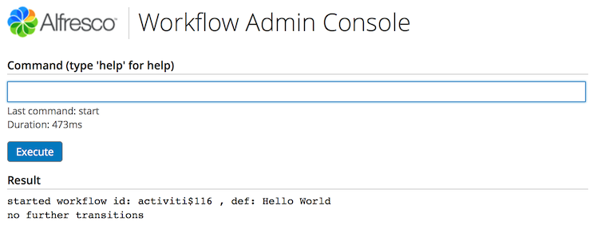

- Introduction
- What is a workflow?
- Activiti Concepts
- Setup
- Hello World Examples
- Configuring a workflow for Alfresco Share
- SomeCo Whitepaper submission example
- Conclusion
- Where to find more information
Introduction
This tutorial is about the advanced workflow functionality available in Alfresco through its embedded Activiti workflow engine. First, because "workflow" can mean different things to different people, I'll talk about my definition of the term. Then, I'll introduce some Activiti concepts that will help you understand how processes are defined and how the workflow engine actually works. Once that foundation is in place, I'll walk through some examples that feature many of the different concepts.
This tutorial builds upon the "SomeCo" examples covered in earlier tutorials. In it, I'll implement a business process that helps SomeCo route whitepapers for review and approval by internal as well as external parties.
What is a workflow?
When Alfresco released version 1.4 of the product, they made a huge leap forward in enterprise readiness. That was the release when Alfresco embedded the JBoss jBPM engine into the product which meant that enterprises could route Alfresco repository content through complex business processes. A content repository without the ability to facilitate business processes that produce, consume, or transform the content within it is little more than a glorified file server, so this was a welcome addition.
But before I geek out on the wonders of graph based execution languages let's agree on what the term workflow means. Generically, a workflow is "a reliably repeatable pattern of activity enabled by a systematic organization of resources...that can be documented and learned"(source). The term has been around since people started studying the nature of work in the early 20th century in an effort to streamline manufacturing processes.
In fact, in the world of ECM, it is sometimes helpful to think of an assembly line or manufacturing process when thinking about how content flows through an organization. Content is born of raw material (data), shaped and molded by one or more people (collaboration) or machines (systems), reviewed for quality, and delivered to consumers. Content may go through a single process or many sub-processes. Content may take different routes through a process based on certain characteristics of that content. The output of an organization or department of knowledge workers is essentially the content that comes rolling off the assembly line (the collection of workflows that define that organization's business processes).
Although not always formalized or automated, almost everyone in modern society has been involved in a workflow in some way:
- When you submit an insurance claim, you are initiating a workflow.
- If you witness drunk and disorderly conduct on an airline flight and are asked to provide a statement to the airline, you are participating in a workflow. (Seriously, it happens more often than you'd think).
- When you check on the status of your loan application, you are asking for metadata about a running workflow.
- When someone brings you a capital request that requires your approval because it is over a certain dollar amount, a characteristic of that request (the dollar amount) has triggered a decision within the workflow that routes the capital request to you.
- When you give the final approval for a piece of web content to be published, it is likely you are completing a workflow.
As varied as these examples are, all of them have a couple of things in common that make them relevant to ECM:
- They are examples of human-to-human and, in some cases, human-to-machine interaction
- They are content- or document-centric.
These are two very important characteristics that help clarify the kind of workflow I am talking about. There are standalone workflow engines (in fact, Activiti is one of them) that can be used to model and execute all sorts of "repeatable patterns of activity", with or without content, but in the ECM space, the patterns focused on most often are those that involve humans working with content.
Of course document-centric workflows may include fully automated steps and machine-to-machine interactions—the point is that document-centric workflows in which humans review, approve, or collaborate in some way are in the scope of the discussion while processes which run lights-out system-to-system orchestration or integration are not.
Options for implementing workflow in your apps
Some of you are saying, "You're right. Workflows are everywhere. I could really streamline my organization by moving processes currently implemented with email, phone calls, and cubical drive-bys into a more formalized workflow. What are my options?" Let's talk about three: Roll your own, Standalone workflow engines, and Embedded workflow engines.
Roll your own
People are often tempted to meet their workflow requirements with custom code. Very basic systems might be able to get by with a single flag on a record or an object that declares the status of the content like "Draft" or "In Review" or "Approved". But flags only capture the "state" of a piece of content. If you want to automate how content moves from state to state, the coding and maintenance becomes more complex. Sure, you can write code as part of your application that knows that once Draft documents are submitted for review, they need to go to Purchasing first and then to Finance, if and only if the requested cash outlay is more than $10m but do you really want to?
People intent on rolling their own workflow often realize the maintenance problem this creates, so they create an abstraction used to describe the flow from state-to-state that keeps them from embedding that logic in compiled code. Once they've done that, though, they've essentially created their own proprietary workflow engine that no one else in the world knows how to run or maintain. And with all of the open source workflow engines available, why would you want to do that? So the "roll your own" option is really not recommended for any but the most basic workflow requirements.
Standalone engines
There are a number of standalone workflow engines—sometimes more broadly referred to as BPM (Business Process Management)—both open source and proprietary. These are often extremely robust and scalable solutions that can be used to model, simulate, and execute any process you can think of from high-volume loan processing to call center queue management. Often, these workflow engines are implemented in conjunction with a rules engine which lets business users have control over complicated if-then-else decision trees.
Standalone engines are most appropriate for extremely high volume or exceedingly complex solutions involving multiple systems. Another good use for standalone engines is when you are developing a custom application that has workflow requirements. Standalone engines can usually talk to any database or content management repository you might have implemented, but they won't be as tightly integrated into the content management system's user interface as the workflow engine built-in to the CMS. For this reason, for content-centric solutions that operate mostly within the scope of the CMS, it is usually less complicated (and less costly) to use the workflow engine embedded within the CMS, provided it has enough functionality to meet the business' workflow requirements.
Embedded workflow engines
Almost every CMS available today, whether open source or proprietary, has a workflow engine of some sort embedded within it. However, the capability of each of these vary widely. If you are in the process of selecting a CMS and you already know the kind of workflow requirements you'll face, it is important to understand the capabilities of the workflow engine embedded within the systems you are considering before making a final selection.
The major benefit of leveraging an embedded workflow engine is the tight level of integration for users as well as developers. Users can initiate and interact with workflows without leaving the CMS client. Typically, developers customizing or extending the CMS can work with workflows using the core CMS API.
Out-of-the-box workflow options in Alfresco
Alfresco has two options for implementing workflows within the product. For very simplistic workflows, non-technical end-users can leverage Alfresco's Basic Workflow functionality. For more complex needs, Alfresco has Advanced Workflow functionality.
Basic workflows
Basic workflows are a nice end-user tool. You should know how they work and what the features and limitations are so you can make good decisions about when to use them. Basic workflows use folders and a "forward step/backward step" model to implement serial processes. When a piece of content is dropped in a folder, a rule is triggered that associates a "forward step" and a "backward step" (one or the other or both) with the content. These steps are tied to Alfresco actions such as "Set a property" or "Move the content to a specified folder". End users can then click on the appropriate step for a given piece of content.
For example, suppose SomeCo has a simple submit-review-approve process in which content is submitted, then reviewed, then approved or rejected. One way to implement this with basic workflows is to use three folders—let's say they are called "Draft", "In Review", and "Approved"—each of which have a rule set that applies a basic workflow. The workflow for content in the Draft folder would have a single forward step labeled "Submit" and its action would move content to the "In Review" folder and send an email to the approver group. The "In Review" folder would have a workflow in which the forward step would be labeled "Approve" and it would copy the content to an "Approved" folder. The backward step would be labeled "Reject" and its action would move the content back to the "Drafts" folder.
In the "Creating Custom Actions" tutorial, you created a custom rule action called "Move Replaced" that could be used in conjunction with this basic workflow to move old content out of the Approved folder and into an Archived folder, for example.
You can see that basic workflows are useful, and when combined with rules and actions, you can automate simple business processes. But basic workflows are limited with regard to the complexity of the business processes they can handle.
Advanced workflows
Advanced workflows are useful when you need much more control over the business process. Typical requirements that require the use of the advanced workflow engine are things like:
- Assignment of tasks to specific users or groups
- Parallel paths through the business process
- Decisions based on content metadata or other criteria
- The ability to handle exceptions
- Timers
All of these (and more) are features of the embedded Activiti workflow engine which is what is used to implement advanced workflows in Alfresco.
Although I haven't yet covered the detailed capabilities of Alfresco advanced workflows, I thought it would be a good idea to compare basic and advanced workflows at a high level now so I can leave the topic of basic workflows behind and spend the rest of the tutorial on advanced workflows:
| Alfresco basic workflows... | Alfresco advanced workflows... |
|---|---|
| Are configurable by non-technical end-users via Alfresco Share | Are defined by business analysts and developers using a graphical tool or by writing XML |
| Leverage rules, folders, and actions | Leverage the power of the embedded Activiti workflow engine |
| Can only handle processes with single-step, forward and/or backward, serial flows | Can model any business process including decisions, splits, joins, parallel flows, sub-processes, wait states, and timers |
| Do not support decisions, splits, joins, or parallel flows | Can include business logic written either in JavaScript or Java, either of which can access the Alfresco API |
| Do not maintain state or metadata about the process itself | Maintain state and process variables (metadata) about the process itself |
| Do not support the concept of task assignment | Support assigning tasks to individuals, groups, and pools of users |
Now that you understand the definition of workflow in the context of ECM, some of the options for implementing workflow requirements, and the options within Alfresco specifically, it's time to start exploring some Activiti concepts.
Activiti Concepts
This section introduces you to some Activiti concepts before moving on to the developer setup.
What is Activiti?
Activiti is an open source, standalone workflow engine. All it needs is Java. It can run in a servlet container or it can be embedded in any Java application. The Activiti engine is responsible for managing deployed processes, instantiating and executing processes, persisting process state and metadata to a relational database, and tracking task assignment and task lists.
Activiti is its own independent open source project. It just happens that the founders of the project and several other members of the development team are employed by Alfresco. Activiti is built to be embedded in any application that has workflow requirements. What's cool is that the work of integrating it with Alfresco has already been done for you.
Why two advanced workflow engines?
I mentioned earlier that Alfresco started embedding JBoss jBPM in Alfresco with release 1.4. Starting with Alfresco 4.0, Alfresco added Activiti.
Alfresco added Activiti because they wanted an Apache-licensed workflow engine. JBoss was unwilling to change the jBPM license, so Alfresco hired jBPM creator, Tom Baeyens, and some of his team to start a new open source project aimed at building an Apache-licensed, BPMN 2.0 compliant workflow engine. The result is Activiti.
In Alfresco 5.1, Alfresco dropped jBPM from the product and is moving forward with Activiti. If you are on older versions of Alfresco and you are still using jBPM, you should move to Activiti now.
BPMN 2.0
I mentioned earlier that Activiti is BPMN 2.0-compliant. BPMN stands for Business Process Modeling Notation. It's a specification managed by the Object Management Group (OMG) that defines exactly what the name suggests: A standard syntax for describing business processes. The specification is aimed at both humans (i.e., graphical notation of a business process) and machines (i.e., XML syntax describing the business process).
The two main benefits of using a BPMN-compliant workflow engine are:
- When business analysts collaborate on business process projects, they can use a common diagram and language to discuss the process, regardless of the tool that is ultimately used to implement it.
- Any tool that produces BPMN-compliant XML can be used to define a business process and the resulting XML should theoretically work with any compliant workflow engine.
Process definitions
A business process can be described as a graph of connected nodes. In Activiti (and really, in BPMN) these nodes are essentially events (start, stop, timer), tasks, and gateways. These nodes are connected by "sequence flows". You can model just about any business process you can think of by organizing events, tasks, gateways, and sequence flows on a diagram.
The OMG has a great document called, "BPMN 2.0 by Example" that shows several examples of business process diagrams and then walks you through each. There's a link to it at the end of this document. The diagrams include features that may not be included in the current release of Activiti, but they do illustrate the kinds of things you can do with BPMN 2.0. For example, here's a diagram from that document called "The Pizza Collaboration":

OMG's Pizza Collaboration Example
A process, then, is a collection of events, tasks (some automated, some performed by humans), and gateways, connected by sequence flows.
Setup
It's almost time to roll up your sleeves. Let me tell you about the tools you'll need and then give you a description of the project organization.
Tools
Here is what I am using on my machine:
- Mac OS X 10.11.6
- Java 1.8.0_31
- Apache Maven 3.3.9 (installed using Macports)
- Alfresco Maven SDK 3.0.0 (No download necessary)
- Eclipse Java EE IDE for Web Developers, Neon
- Activiti Eclipse BPMN 2.0 Designer 5.18 (Eclipse Update Site)
- Alfresco Community Edition 5.2.f (Download)
- Apache James 2.3.1 (for testing third-party notification via SMTP)
By default, when you create an Alfresco project using version 3.0.0 of the Alfresco Maven SDK the project will be configured to depend on Alfresco Community Edition 5.2.f.
Project Organization
I am going to use the Alfresco Maven SDK to create projects that will package up my customizations as AMPs (Alfresco Module Packages). I will ultimately create two AMPs. One AMP is for the Alfresco web application (the "repo" tier) and the other is for the Alfresco Share web application (the "Share" tier). Unless you have a good reason to do otherwise, this should be your default approach to packaging and deploying your customizations.
I am not going to spend much time talking about how the Alfresco Maven SDK works. If you aren't already familiar with it, you may want to read the Getting Started with the Alfresco Maven SDK tutorial on ecmarchitect.com first and then come back to this one.
This tutorial relies on code from the Custom Content Types tutorial. The tutorial assumes that the repo tier AMP and Share tier AMP created during that tutorial have been deployed to the Alfresco server you will be deploying your custom actions AMPs to. More details on that will be discussed later in the document.
If you are planning on following along, go ahead and use the Alfresco Maven SDK to create two new projects. One should use a groupId of "com.someco" and an artifactId of "workflow-tutorial-repo" for the repo tier project and "workflow-tutorial-share" for the share tier project.
Starting with 3.0.0, the SDK will generate JAR files. We want to generate AMPs, so edit the pom.xml files to uncomment the maven-assembly-plugin.
Hello World Examples
Let's create a couple of super simple Hello World processes using the Activiti Process Designer. These processes will not be wired into the Alfresco web client user interface. Instead, I'll use the workflow console to start them. Once I've run through the basic steps of diagramming and deploying workflows, I'll show you examples that are fully integrated into the user interface.
The helloWorld process
The helloWorld process will consist of a start event, a user task, and an end event. The goal is to do nothing more than write "Hello, World!" to the Alfresco log.
Workflows reside in:
$TUTORIAL_HOME/workflow-tutorial-repo/src/main/resources/alfresco/module/workflow-tutorial-repo/workflowWhen you created the workflow-tutorial-repo project using the Alfresco Maven SDK, the folder structure was created for you, and it may have included a "workflow" directory with a sample workflow. If so, you can delete the sample workflow. If not, create the "workflow" directory now.
Once that is done, follow these steps:
- Right-click the workflows folder and choose New, Other, Activiti Diagram. Specify "helloWorld.bpmn" for the process name and click Finish.
- Drag-and-drop a start event, a user task and an end event from the palette onto your blank canvas.
- Connect the start event to the user task and the user task to the end event using sequence flows from the palette. When you are done, the diagram should look like this:

Hello World BPMN Diagram
- If it isn't open already, open the "Properties" view by going to Window, Show View, Other, General, Properties.
- Make sure "Select" is clicked in the palette, then single-click the "User Task" task.
- Specify "${initiator.properties.userName}" as the assignee, as shown below:

Hello World user task properties
- Click somewhere on the canvas. This should display the "Process" tab in the Properties viewer. Specify "helloWorld" as the ID and "Hello World" as the Name.

Hello World user task properties
- Save and close the diagram.
Let's put a little logger statement in the process to see how to add code to a process. Activiti supports multiple scripting languages, but in Alfresco's embedded Activiti, JavaScript is the most practical because it gives you access to the full JavaScript API.
To add code to the process, re-open the "helloWorld.bpmn" file in the XML editor instead of the diagram editor and look for the sequence flow that connects the start event to the user task. It should look something like this:
<sequenceFlow id="flow1" sourceRef="startevent1" targetRef="usertask1"></sequenceFlow>Note that your id attribute value may be different than mine depending on what order you created the sequence flow.
Activiti has all kinds of hook points for custom code. To log a message when this sequence flow starts, add an execution listener on the flow, like this:
<sequenceFlow id="flow1" sourceRef="startevent1" targetRef="usertask1">
<extensionElements>
<activiti:executionListener event="start" class="org.alfresco.repo.workflow.activiti.listener.ScriptExecutionListener">
<activiti:field name="script">
<activiti:string>logger.log("Hello, World!");</activiti:string>
</activiti:field>
</activiti:executionListener>
</extensionElements>
</sequenceFlow>Now save the diagram.
Look at the activiti:executionListener element. You can see from the event attribute that this script will be fired when the "start" event for this sequence flow happens. The class attribute specifies the class to invoke which is an out-of-the-box class called ScriptExecutionListener. The activiti:string element could contain any server-side JavaScript. For right now it is a simple logger statement. In a later example, you'll see how to iterate over the documents in the workflow package.
You're going to run this process shortly. Before that, let's create another simple process to see how forks work.
The helloWorldFork process
Before I show you how to deploy the process definition to Alfresco, let's do another Hello World example that does a fork and a join.
Do this:
- Create a new diagram in the workflows folder called "helloWorldFork.bpmn".
- From the palette, grab a start event, an end event, two user tasks, and two parallel gateways.
- Click "Select" in the palette, then click each of the two user tasks to change their names to "User Task A" and "User Task B" respectively.
- Click "Sequence Flow" in the palette and connect the nodes in the diagram so it looks like this:

Hello World Fork BPMN Diagram
- Click somewhere on the canvas. This should display the "Process" tab in the Properties viewer. Specify "helloWorldFork" as the ID and "Hello World Fork" as the Name.
- Save and close the diagram.
Now you have a business process with two parallel paths of execution. If you wanted the process to go to either User Task A or User Task B, but not both, you would use an exclusive gateway instead of a parallel gateway.
Similar to the first example, let's add a logger statement to the sequence flows leading to the two user tasks. Open helloWorldFork.bpmn in the XML editor and add two new extensionElements elements, one in each of the sequenceFlow elements that lead to "usertask1" and "usertask2":
<sequenceFlow id="flow2" sourceRef="parallelgateway1" targetRef="usertask1">
<extensionElements>
<activiti:executionListener event="start" class="org.alfresco.repo.workflow.activiti.listener.ScriptExecutionListener">
<activiti:field name="script">
<activiti:string>
logger.log("Hello, World, from transition to User Task A!");
</activiti:string>
</activiti:field>
</activiti:executionListener>
</extensionElements>
</sequenceFlow>
<sequenceFlow id="flow3" sourceRef="parallelgateway1" targetRef="usertask2">
<extensionElements>
<activiti:executionListener event="start" class="org.alfresco.repo.workflow.activiti.listener.ScriptExecutionListener">
<activiti:field name="script">
<activiti:string>
logger.log("Hello, World, from transition to User Task B!");
</activiti:string>
</activiti:field>
</activiti:executionListener>
</extensionElements>
</sequenceFlow>Remember to save the diagram.
With a couple of, admittedly, ridiculously simple examples saved in the workflow-tutorial-repo project, it is time to deploy them to Activiti running within Alfresco and try them out.
Deploying processes
There are two other options for deploying workflows to Alfresco:
- Use the Alfresco Workflow Console
- Configure the workflows through Spring configuration
This tutorial will use Spring to deploy the workflows initially. Then, use the Alfresco Workflow Console to deploy subsequent versions if needed.
Deploying the workflows with Spring
As you learned in previous tutorials, the AMP project created by the Alfresco Maven SDK already has a Spring context file. It is named "bootstrap-context.xml" and resides in:
$TUTORIAL_HOME/workflow-tutorial-repo/src/main/resources/alfresco/module/workflow-tutorial-repo/contextEdit that file and delete any existing bean elements that the SDK might have added for you. Then, add a workflow deployer bean, like this:
<bean id="${project.artifactId}.workflowBootstrap" parent="workflowDeployer">
<property name="workflowDefinitions">
<list>
<props>
<prop key="engineId">activiti</prop>
<prop key="location">alfresco/module/${project.artifactId}/workflow/helloWorld.bpmn</prop>
<prop key="mimetype">text/xml</prop>
<prop key="redeploy">false</prop>
</props>
<props>
<prop key="engineId">activiti</prop>
<prop key="location">alfresco/module/${project.artifactId}/workflow/helloWorldFork.bpmn</prop>
<prop key="mimetype">text/xml</prop>
<prop key="redeploy">false</prop>
</props>
</list>
</property>
</bean>Setting "redeploy" to false prevents the workflows from being redeployed every time Alfresco restarts.
The JavaScript in these business processes contain "logger" statements. To get those to show up in the log, edit the dev-log4j.properties file that is in the test part of your module. It resides in:
$TUTORIAL_HOME/workflow-tutorial-repo/src/test/resources/alfresco/extensionChange the ScriptLogger to debug by changing this line:
log4j.logger.org.alfresco.repo.jscript.ScriptLogger=DEBUGNow everything is ready to go. For this test, you can leverage the embedded Alfresco server that the Alfresco Maven SDK sets up for you. To run your AMP in the embedded Alfresco server, open a command-line window, switch to $TUTORIAL_HOME/workflow-tutorial-repo, and run run.sh (or run.bat depending on your operating system.).
Apache Maven will download some dependencies, build your AMP, merge it with the Alfresco WAR file, then start up an embedded Tomcat server.
Next you'll see how to use the Alfresco Workflow Console to test the two hello world process definitions.
Using the workflow console
Your Alfresco server is running and the hello world process definitions should have been deployed when the server started up. The Alfresco Workflow Console can be used to verify that they were deployed successfully. And you can use it to start instances of those workflows to test them out. It can also be a handy workflow debugging tool.
In Alfresco Enterprise, the Workflow Console link is: http://localhost:8080/alfresco/s/enterprise/admin/admin-workflowconsole
In Alfresco Community, the Workflow Console link is: http://localhost:8080/alfresco/s/admin/admin-workflowconsole
If you haven't already authenticated as an administrator you will be asked to do so when you go to that URL.
In the workflow console do this:
Type "show definitions all" then click Execute to see what process definitions have been deployed:

Workflow console: Show definitions all
You should see entries for helloWorld and helloWorldFork. Note that the ID for helloWorld is "activiti$helloWorld:1:104" and the ID for helloWorldFork is "activiti$helloWorldFork:1:108". Your IDs may be different.
- Type "use definition activiti$helloWorld:1:104" and click Execute. Subsequent commands having to do with a workflow definition will now use that one by default.
Start an instance of the helloWorld workflow by typing "start" and clicking Execute. You should see something like this:
Workflow console: Start workflow
And in the server log, the logger output appears:

Hello World log output
Now follow the same steps to start an instance of the helloWorldFork process. You should see log messages from both tasks.

Hello World log output
After running helloWorldFork go back to the workflow console and type "show workflows all" and click Execute. That command shows the running workflow instances. You'll notice that the helloWorldFork workflow is still running. The easiest way to get rid of it is to use the "delete workflow [workflow ID]" command (you'll need the workflow's ID from the "show workflows all" command you just completed).
You've seen how to start workflows and how to list and delete running workflows using the workflow console. The table below shows some other common commands and what they do.
| Command | What it does |
|---|---|
| show workflows all | Shows all running workflows. |
| use workflow <workflow id> where <workflow id> is something like activiti$6300 | Makes all subsequent commands happen in the context of the specified workflow. |
| show transitions | Shows all leaving transitions. |
| signal <path id> <transition> where <path id> is something like activiti$6334 and transition is the name of the leaving transition you want to take. Leave off the transition to take the default. | Signals the token. Good when your workflow is stuck on a node or when you want to take a transition without fooling with the task management UI. |
| desc path <path id> where <path id> is something like activiti$6334 | Dumps the current context. Great for debugging process variables. |
| end workflow <workflow id> where <workflow id> is something like activiti$6300 | Cancels the specified workflow. |
| show definitions all | Shows the current deployed workflows. |
| undeploy definition <workflow id> or undeploy definition name <workflow name> | Undeploys the specified workflow and stops any workflows running with that definition. The <workflow id> variant undeploys a specific version of a workflow. |
These are a subset of the commands available. Type "help" and click Execute to see the full list of commands.
You may be wondering what happens to running workflow instances when a new version of the process definition is checked in. The answer is that Activiti handles that—it makes sure that running workflows continue to run with their original process definition. By default, all new workflows will use the most current version of the process definition.
Configuring a workflow for Alfresco Share
So far you've learned what a workflow is and some Activiti concepts. You used the process designer to diagram two simple processes, deployed those to Alfresco, and ran them using the workflow console. This part of the tutorial explains how to configure a workflow in the Alfresco Share user interface.
Workflows are configured for the Alfresco Share user interface through the form service. Recall from the custom content types stutorial that the form service uses the content model XML and the Share form configuration to generate a nice form for end users. Configuring a workflow works exactly the same way: you configure a content model that maps to a business process definition, then configure the form service to produce a form for that model.
At a high level, then, the steps are:
- Define a process using the Activiti Process Designer.
- Define a content model for your workflow in which workflow tasks map to content types. There will never be instances of these content types--they are solely for the purpose of defining forms that the Alfresco Share form service will understand.
- Configure the Alfresco Share user interface. Recall from the custom content types tutorial that share-config-custom.xml is used to configure the Alfresco Share web client.
With that in mind, let's do one more hello world example. This time, the example will use Alfresco Share form configuration. After that, you'll be ready to work through a more real world example that builds upon the SomeCo work started in previous tutorials.
Step 1: Define the helloWorldUI process
The goal for this example is to create a workflow that will capture a piece of metadata (a name the logger should use for a greeting) when the workflow is submitted, and then write the greeting out to the log. The first step is to define the process.
- In Eclipse, right-click on the "workflows" folder and create a new Activiti Diagram named "helloWorldUI.bpmn".
- From the palette, drag a start event, an end event, an Alfresco User Task, and an Alfresco Script task onto the canvas. You'll see the benefit of using the Alfresco-specific User Task and Script Task shortly.
Click "Sequence Flow" in the palette and then connect the nodes in the process to look like this:

Hello World UI BPMN Diagram
- Now set the properties on the Alfresco User Task. Set the performer type to "Assignee" and the expression to "${initiator.properties.userName}". This is the equivalent to what you've done in the first two hello world examples, it's just that this panel uses two separate fields for the performer type and the expression.
Now set the form key. In Alfresco, a form key is the name of a type in a workflow-specific content model. Because this is an Alfresco User Task instead of a generic User Task, it already knows the possible values for the out-of-the-box form keys. Set the form key to "wf:activitiReviewTask". The out-of-the-box workflow content model has a type by that name and the out-of-the-box form configuration is already set up to create a form for the properties defined as part of that type.

Alfresco User Task properties
The requirement is to let the workflow initiator specify a name that the logger will use in a greeting. So the start event needs to point to a custom form key (which represents a custom content type you'll create shortly). Single-click the start event, then set the form key to "scwf:submitHelloWorldTask".

Start event properties
- Single-click the canvas to open the properties editor for the process. Set the ID to "helloWorldUI" and the name to "Hello World UI".
Save and close the diagram.
Tasks
You saw in the steps above that tasks can be assigned to human performers. Activiti maintains a list of tasks assigned to each participant. How users interact with the task list is up to each application. In Alfresco, a dashlet displays a to-do list for the currently logged in user. As users complete their tasks the tasks are removed from the to-do list. An empty to do list is shown below.

An empty task list in Alfresco Share
Task Assignment
If tasks are steps a human performs, how do tasks get assigned to the people who need to perform them? Activiti has extended BPMN with their own attribute called "activiti:assignee". The value of the attribute can be a literal username or group name, or it can be an expression. In this case you assigned the user task to ${initiator.properties.userName}. Initiator is a special object that will always contain the object representing the person who started the workflow.
The diagram is now complete and ready for some server-side JavaScript to be added.
Add logic to the process definition
The diagram is done. Let's add some logic.
Similar to earlier hello world examples, let's add a logger statement to print a greeting. The difference is that in this example, the greeting includes a person's name that was specified in a form when the initiator started the workflow.
Process Variables
Often, there is metadata about a process that needs to be tracked. In this case, the metadata is the person's name. The person's name isn't really a property of the content being routed through the workflow—it's a property of the process itself. Activiti gives us the ability to store this kind of data as part of the running process through process variables.
Process variables are name-value pairs that will get persisted with the rest of the process state.
Try It
To add a logger statement with a process variable to the helloWorldUI example, do this:
Open helloWorldUI.bpmn in the XML editor.
Find the sequenceFlow element that goes from the start event to the user task and add the following extensionElements element:
<sequenceFlow id="flow1" sourceRef="startevent1" targetRef="alfrescoUsertask1">
<extensionElements>
<activiti:executionListener event="start" class="org.alfresco.repo.workflow.activiti.listener.ScriptExecutionListener">
<activiti:field name="script">
<activiti:string>logger.log("Hello, " + scwf_helloName + "!");</activiti:string>
</activiti:field>
</activiti:executionListener>
</extensionElements>
</sequenceFlow>The scwf_helloName variable maps to a property defined in the scwf:submitHelloWorldTask type. You'll define that later.
The review task lets the user select "approve" or "reject". The execution of the workflow needs the value of that selection. Add the logic needed to make that happen:
<userTask id="alfrescoUsertask1" name="Alfresco User Task" activiti:assignee="${initiator.properties.userName}" activiti:formKey="wf:activitiReviewTask">
<extensionElements>
<activiti:taskListener event="complete" class="org.alfresco.repo.workflow.activiti.tasklistener.ScriptTaskListener">
<activiti:field name="script">
<activiti:string>execution.setVariable('wf_reviewOutcome', task.getVariable('wf_reviewOutcome'));</activiti:string>
</activiti:field>
</activiti:taskListener>
</extensionElements>
</userTask>And, finally, just to show that a value can be set in one task and read in another, let's log the value of the approve/reject selection from within the Alfresco Script service task:
<serviceTask id="alfrescoScripttask1" name="Alfresco Script Task" activiti:class="org.alfresco.repo.workflow.activiti.script.AlfrescoScriptDelegate">
<extensionElements>
<activiti:field name="script">
<activiti:string>logger.log("The outcome of the review task is: " + wf_reviewOutcome);</activiti:string>
</activiti:field>
</extensionElements>
</serviceTask>Now the process is ready to go. The next step is to get the workflow content model squared away.
Step 2: Define a workflow-specific content model
The workflow-specific content model defines the data structure for the process. Workflow models use the same fundamental building blocks—types, properties, aspects, and associations—as "normal" Alfresco content model definitions. In fact, if you already have a custom model, you can define your workflow-specific model in the same content model XML file, although to reduce confusion, I recommend you keep your content types separate from your workflow types by using at least two different model files.
What is the purpose of the workflow-specific model? Think of it like any other content model. Custom content models are used to define the metadata that needs to be captured about a piece of content. The metadata (properties) are grouped into types and aspects. By virtue of defining these properties as part of the content model, Alfresco takes care of persisting the data to the underlying database.
Workflow models function in the same way. Suppose you have a process in which three different departments are involved in an approval process. Maybe you'd like the workflow initiator to be able to define which of those departments are required approvers and which are optional or "FYI" reviewers. A workflow model defines how that information is going to be stored.
As in other content models, you don't have to start from scratch. Alfresco ships out-of-the-box with some workflow-specific types already defined. There are two model definition files related to this. One is called called bpmModel.xml. It resides in your Alfresco web application root under WEB-INF/classes/alfresco/model. The other is called workflowModel.xml and it resides under WEB-INF/classes/alfresco/workflow.
The bpmModel file contains the lowest-level workflow classes such as the base definition for all tasks and the default start task. It also contains important aspects such as a set of "assignee" aspects that define associations between tasks and users or groups.
The workflowModel file contains the content model for the out-of-the-box process definitions. This model file offers a lot of potential for reuse in your custom processes. For example, if your process starts by allowing the submitter to specify a list of several people to receive a task, you could use the wf:submitParallelReviewTask type. If you want to base an approval on the percentage of individuals who approve a task, you can use the wf:submitConcurrentReviewTask type. Of course just like any model you are free to use these as-is, extend them, or not use them at all.
When users interact with the workflow via the web client, Alfresco will use the workflow content model and the Alfresco Share form service configuration to figure out what metadata to expose to the UI and how to present it just as it does when viewing content properties. In Activiti, Alfresco uses the value of the form key attribute to figure out the appropriate workflow content type. So, all tasks in which there are Alfresco web client user interactions must be given a form key that corresponds to the name of a workflow content type.
Create the workflow content model XML
In the helloWorldUI example, you defined the following start event:
<startEvent id="startevent1" name="Start" activiti:formKey="scwf:submitHelloWorldTask"></startEvent>Now you need to create a content model with a custom type that corresponds to the form key value. From previous tutorials you know that models are defined in XML and reside in:
$TUTORIAL_HOME/workflow-tutorial-repo/src/main/resources/alfresco/module/workflow-tutorial-repo/modelThe SDK has already created the "model" folder for you as well as a couple of sample model files. Go ahead and delete the sample model files as they will not be needed.
In the model folder, create a new content model XML file called "scWorkflowModel.xml" with the following content:
<?xml version="1.0" encoding="UTF-8"?>
<!-- Definition of new Model -->
<model name="scwf:workflowmodel"
xmlns="http://www.alfresco.org/model/dictionary/1.0">
<!-- Optional meta-data about the model -->
<description>Someco Workflow Model</description>
<author>Jeff Potts</author>
<version>1.0</version>
<!-- Imports are required to allow references to definitions in other models -->
<imports>
<import uri="http://www.alfresco.org/model/dictionary/1.0"
prefix="d" />
<import uri="http://www.alfresco.org/model/bpm/1.0"
prefix="bpm" />
</imports>
<!-- Introduction of new namespaces defined by this model -->
<namespaces>
<namespace uri="http://www.someco.com/model/workflow/1.0"
prefix="scwf" />
</namespaces>
<types>
<type name="scwf:submitHelloWorldTask">
<parent>bpm:startTask</parent>
<properties>
<property name="scwf:helloName">
<type>d:text</type>
<mandatory>true</mandatory>
<multiple>false</multiple>
</property>
</properties>
</type>
</types>
</model>The scwf:submitHelloWorldTask type is a child of bpm:startTask and declares a property called scwf:helloName. That's a text property that will be displayed as a text field the workflow initiator can use to tell the workflow who to greet.
Alfresco needs to know about this model. This is done through Spring configuration. There will be a few other additions to that context file so you'll do them all at once shortly.
Step 3: Configure Alfresco Share
The next step is to tell Alfresco Share how to display the process metadata. This works exactly like custom content types. As you saw in that tutorial, Share customizations go in their own project so that they can be packaged in an AMP specifically for the share tier.
Edit share-config-custom.xml
The user interface configuration for Alfresco Share resides in a directory called:
$TUTORIAL_HOME/workflow-tutorial-share/src/main/resources/META-INFThe SDK probably already created this directory structure as well as a sample share-config-custom.xml file.
In the META-INF directory, edit the file called "share-config-custom.xml". Replace the sample content with the following content:
<alfresco-config>
<config evaluator="string-compare" condition="activiti$helloWorldUI">
<forms>
<form>
<field-visibility>
<show id="bpm:workflowDescription" />
<show id="packageItems" />
<show id="scwf:helloName" />
<show id="transitions" />
<show id="bpm:status" />
</field-visibility>
<appearance>
<set id="" appearance="title" label-id="workflow.set.general" />
<set id="items" appearance="title" label-id="workflow.set.items" />
<set id="progress" appearance="title" label-id="workflow.set.task.progress" />
<set id="other" appearance="title" label-id="workflow.set.other" />
<field id="bpm:workflowDescription" label-id="workflow.field.message">
<control template="/org/alfresco/components/form/controls/textarea.ftl">
<control-param name="style">width: 95%</control-param>
</control>
</field>
<field id="packageItems" set="items" />
<field id="scwf:helloName" set="other" />
<field id="bpm:status" set="progress" />
</appearance>
</form>
</forms>
</config>
</alfresco-config>This form tells Alfresco Share that when someone starts a process named "activiti$helloWorldUI" it should show the user this form. The form definition includes the scwf:helloName property defined in the custom type.
Externalize the strings
Alfresco Share needs to know which strings to use to display things like the workflow title and description that show up in the "Start Advanced Workflow" dialog, and titles and descriptions for individual tasks. The identifiers for these strings follow a specific format.
There are two separate properties bundles to deal with. One is for the "repo" tier, so it goes in the workflow-tutorial-repo project. The other is for the "share" tier, so it goes in the workflow-tutorial-share project.
Properties for the repo tier go in:
$TUTORIAL_HOME/workflow-tutorial-repo/src/main/resources/alfresco/module/workflow-tutorial-repo/messagesThe SDK has already created the "messages" folder along with a sample properties file, which you can delete.
In the messages folder, create a new file called "scWorkflow.properties" with the following content:
# Workflow related strings
helloWorldUI.workflow.title=Hello World UI (Activiti)
helloWorldUI.workflow.description=A simple hello world process using Activiti
# Workflow Model related strings
scwf_workflowmodel.type.scwf_submitHelloWorldTask.title=Start Hello World UI Workflow
scwf_workflowmodel.type.scwf_submitHelloWorldTask.description=Submit a workflow that says hello in the log
scwf_workflowmodel.property.scwf_helloName.title=Name
scwf_workflowmodel.property.scwf_helloName.description=Say hello to this personI tend to think of these properties as belonging to two groups. One group is the set of model-related properties. These properties externalize the strings in the workflow content model. The other is the set of process-related properties. These properties externalize the strings users see when they are working with the process (the workflow title, the workflow history, etc.).
Properties for the share tier go in:
$TUTORIAL_HOME/workflow-tutorial-share/src/main/resources/alfresco/web-extension/messagesThe SDK has already created the "messages" folder and a sample properties file which you can delete.
In the messages folder, create a new file called "scWorkflow.properties" with the following content:
#scwf:helloName
prop.scwf_helloName=Name
#workflow properties
workflow.scwf_helloWorldUI=Hello World UIBoth of these properties files have to be registered through Spring. You'll see that next.
Update the Spring configuration
In this section you've made several changes that require Spring configuration updates in each of the two projects:
- Custom workflow model
- helloWorldUI business process definition
- Localized properties for the repo tier
- Localized properties for the share tier
Let's update the repo tier Spring configuration, then the share tier.
Repo tier Spring configuration
Edit the bootstrap-context.xml file that resides in:
$TUTORIAL_HOME/workflow-tutorial-repo/src/main/resources/alfresco/module/workflow-tutorial-repo/contextYou can add the workflow model, the new workflow, and the labels all in the same bean. Edit the bootstrap-context.xml file and append the following to the existing bean element:
<props>
<prop key="engineId">activiti</prop>
<prop key="location">alfresco/module/${project.artifactId}/workflow/helloWorldUI.bpmn</prop>
<prop key="mimetype">text/xml</prop>
<prop key="redeploy">false</prop>
</props>
</list>
</property>
<property name="models">
<list>
<value>alfresco/module/${project.artifactId}/model/scWorkflowModel.xml</value>
</list>
</property>
<property name="labels">
<list>
<value>alfresco.module.${project.artifactId}.messages.scWorkflow</value>
</list>
</property>
</bean>Save and close the file.
Share tier Spring configuration
The Spring configuration for the workflow-tutorial-share project resides in:
$TUTORIAL_HOME/workflow-tutorial-share/src/main/resources/alfresco/web-extensionIn the web-extension directory, the SDK has created file called "workflow-tutorial-share-slingshot-application-context.xml". Replace the content of that file with the following content:
<?xml version='1.0' encoding='UTF-8'?>
<!DOCTYPE beans PUBLIC '-//SPRING//DTD BEAN//EN' 'http://www.springframework.org/dtd/spring-beans.dtd'>
<beans>
<!-- Add Someco Workflow messages -->
<bean id="${project.artifactId}_resources" class="org.springframework.extensions.surf.util.ResourceBundleBootstrapComponent">
<property name="resourceBundles">
<list>
<value>alfresco.web-extension.messages.scWorkflow</value>
</list>
</property>
</bean>
</beans>Save and close the file.
The helloWorldUI example is now ready to deploy.
Deploy & Test
The hello world UI example can be tested using the embedded Tomcat servers that are part of the workflow-tutorial-repo and workflow-tutorial-share projects. The trick is to start each of them separately, passing in an alternative port for the Alfresco Share WAR.
- Open a command-line window and switch to $TUTORIAL_HOME/workflow-tutorial-repo.
- Run
run.sh(orrun.bat). Your repo tier project will be installed and started on Tomcat running on port 8080. - Open a new command-line window and switch to $TUTORIAL_HOME/workflow-tutorial-share.
- Run
run.sh(orrun.bat).
When everything starts up:
- Go to http://localhost:8081/share and log in as admin (password: admin).
In the "My Tasks" dashlet, click "Start Workflow" to start a workflow. You should see the Hello World UI workflow in the list of workflows:

Share workflow list shows custom workflows
Select the Hello World UI workflow. Alfresco Share should display a form that includes the greeting field:

Hello World UI: Start workflow form
- Specify a name in the name field then click "Start Workflow" to start the workflow.
After the workflow starts, you should see the greeting in the log:

Hello World UI greeting in the log
- The "My Tasks" dashlet should now have a task waiting on you. Click the task description to edit the task.
- Add a comment if you want, then click either "Approve" or "Reject".
Check the log again. You should see a log message showing which one you selected:

Hello World UI approval result in the log
If all goes well, congratulations, you've successfully deployed a custom workflow with custom metadata that can be started and managed in Alfresco Share.
Implementation summary
You've covered a lot of ground so far. The following summarizes the advanced workflow implementation steps:
- Model the process using the Activiti Process Designer. Add logic using expressions, Alfresco JavaScript, or Java classes. Use the workflow deployer bean in Spring so that the process definition will get deployed when Alfresco starts.
- Define a workflow content model. Remember to configure it in Spring.
- Update share-config-custom.xml with form configuration that tells Alfresco Share how to handle workflow model you defined in the previous step. Configuring Alfresco Share also means externalizing the strings and referring to those in the Spring context file for both the repo tier and the share tier.
At this point you know enough about advanced workflows to be dangerous. Let's work through an example for the fictitious company, SomeCo, to put some of this new knowledge to work.
SomeCo Whitepaper submission example
This example continues the SomeCo example from the past several Alfresco Developer Series tutorials. SomeCo is going to use Advanced Workflows to route Whitepapers for approval before being flagged for publication on the web site. The next section describes the process.
Business requirements
Anyone that can log in to Alfresco can submit a whitepaper for publication on the SomeCo web site. The only information the submitter needs to specify is the email address of an external third-party reviewer, if applicable. More on that shortly.
The whitepaper needs to be reviewed by the Engineering team as well as the Marketing team. It doesn't matter who on the team does the review—SomeCo wants to notify each team and then let one representative from each team "own" the review task. Either team can reject the whitepaper. If rejected, the person who submitted the whitepaper can make revisions and resubmit. If both teams approve, the whitepaper moves on to the next step.
Some whitepapers need to be reviewed by an external third-party. The third-party won't actually log in to Alfresco—they'll get an email and click a link to approve or reject the whitepaper. If the third-party doesn't do anything in a certain amount of time, the whitepaper should be automatically approved.
High-level steps
Alright. You're going to implement this process in four major steps. Here's a look at the major steps and the respective sub-steps:
- Implement the basic flow and workflow user interface
- Lay out the process using the Activiti Process Designer.
- Configure user tasks with appropriate assignments.
- Add decision logic.
- Implement the workflow content model, the Alfresco Share client configuration, and the workflow properties.
- Deploy and test.
- Implement web scripts and actions for external third-party integration and other business logic
- Execute the "set web flag" action (created in an earlier tutorial) against every whitepaper in the workflow package. The action adds the
sc:webableaspect to the whitepaper and sets the properties appropriately. - Write a web script to handle approval/rejection via HTTP. The logic needs to grab the task and then set the outcome with the appropriate "approve" or "reject" flag.
- Write an Activiti task listener Java class that sends a notification to the third-party email address.
- Deploy and test.
- Execute the "set web flag" action (created in an earlier tutorial) against every whitepaper in the workflow package. The action adds the
- Add a timer to the third-party task
- Add a timer to the Third Party Review task so that if the third party doesn't respond in a timely fashion the task will automatically approve.
- Deploy and test.
Now that you know where you're headed at a high-level, let's get into the details.
Step 1: Implement the basic flow and workflow user interface
Just like in the Hello World examples, the first thing to do is diagram the process. Then, assign tasks, add a bit of logic, and establish the workflow content model before a quick deploy and test.
Diagram the process
The diagram step is just like you've seen before, it's just that the diagram is a little more complex.
- Right-click on the workflows folder, New, Other, Activiti Process Diagram.
- Name the process "publishWhitepaper.bpmn".
- Click on the canvas to open the properties editor for the entire process. Set the ID to "publishWhitepaper" and the name to "Publish Whitepaper".
Drag-and-drop nodes from the palette and connect them with sequence flows to make your diagram look like this:

Publish Whitepaper BPMN Diagram
Submit is a Service Task. The rest are User Tasks. This example does not use the Alfresco-specific events or tasks, but feel free to do so in your own diagrams.
Now that the diagram is in place, continue to the next section to see how to set the task properties.
Configure user tasks with assignments
This table tells you how to set the performer type, expression, and form key on each task:
| Task | Performer Type | Expression | Form Key |
|---|---|---|---|
| Start Event | N/A | N/A | scwf:submitReviewTask |
| Operations Review | Candidate Groups | GROUP_Operations | scwf:activitiOperationsReview |
| Marketing Review | Candidate Groups | GROUP_Marketing | scwf:activitiMarketingReview |
| Revise | Assignee | ${initiator.properties.userName} | scwf:activitiRevise |
| Third-Party Review | Assignee | ${initiator.properties.userName} | scwf:activitiThirdPartyReview |
| Approved Notification | Assignee | ${initiator.properties.userName} | scwf:activitiApprovedNotification |
Pooled Assignments
Notice that the Operations Review and Marketing Review are being assigned to groups instead of individuals. How will the group of people decide who should work on a task? This particular process uses a "pooled assignment". Suppose, for example, the Operations group contains ten people. You could iterate through the group and assign a task to each and every member of the group and then not consider the task complete until some or all group members have taken action. An alternative to that is to use a pooled assignment. Using a pool, all members of a group are notified of the task, but as soon as one group member takes "ownership" of the task, it is removed from everyone else's to do list. The owner can then either complete the task or return it to the pool. If it is returned to the pool, all members of the group see the task in their to do list until another person takes ownership or completes the task. To use pooled assignment, use the activiti:candidateGroups attribute on the userTask element instead of the activiti:assignee element.
The decision to use pooled actors or not depends entirely on the business process—there is no best practice approach.
Add decision logic
At this point the process diagram should save without a problem. Now it is time to switch to re-open the file using the XML editor to add some decision logic to the process.
The process definition has two decisions. One decision figures out if all required approvals have been obtained. If so, the process continues. If not, the initiator gets a chance to make revisions. The other decision is used to determine if a third-party review is required based on whether or not the initiator provided an email address. These are represented by the two exclusive gateways on the diagram.
These are pretty easy decisions to make based on process variables.
Implement the approval check
In the business process XML, find the serviceTask element named "Submit" and add the following script:
<serviceTask id="scripttask1" name="Submit" activiti:class="org.alfresco.repo.workflow.activiti.script.AlfrescoScriptDelegate">
<extensionElements>
<activiti:field name="script">
<activiti:string><![CDATA[execution.setVariable('scwf_approveCount', 0);
execution.setVariable('scwf_tpApproved', false);]]></activiti:string>
</activiti:field>
</extensionElements>
</serviceTask>This initializes two variables that will be used as part of the approval check. The scwf_approveCount variable will get incremented when the process follows the "approve" sequence flow. If the counter is equal to 2, the package received both approvals. It is important to initialize the counter to 0 and the approved variable to false in the "Submit" script task because it is possible that a whitepaper may go through several review cycles. Every time a new cycle starts the counters need to be reset.
You may be wondering why this is a service task instead of a script task. In 5.0.d, the underlying JavaScript engine in Activiti switched from Rhino to Nashorn. This caused a problem related to setting execution variables. The work around is to use a service task.
Now add code to increment the counter when the execution follows the approve sequence flow. Find the userTask named "Operations Review" and add this extension element:
<userTask id="usertask1" name="Operations Review" activiti:candidateGroups="GROUP_Operations" activiti:formKey="scwf:activitiOperationsReview">
<extensionElements>
<activiti:taskListener event="complete" class="org.alfresco.repo.workflow.activiti.tasklistener.ScriptTaskListener">
<activiti:field name="script">
<activiti:string>
if(task.getVariableLocal('scwf_approveRejectOutcome') == 'Approve') {
var newApprovedCount = scwf_approveCount + 1;
execution.setVariable('scwf_approveCount', newApprovedCount);
}
</activiti:string>
</activiti:field>
</activiti:taskListener>
</extensionElements>
</userTask>The JavaScript inspects the value of scwf_approveRejectOutcome which will be set by the user when they manage the task in Alfresco Share. If it is equal to "Approve" it increments scwf_approveCount.
Now add the same thing to the userTask element named Marketing Review.
The first exclusive gateway after the "Operations Review" and "Marketing Review" user tasks represents a decision. If the approvals have been reached, the flow should continue on, otherwise it should go to the "Revise" user task.
To implement this, find the sequenceFlow elements that connect that exclusive gateway and add a conditionExpression element to each one that inspects the scwf_approveCount variable, like this:
<sequenceFlow id="flow8" sourceRef="exclusivegateway1" targetRef="exclusivegateway2">
<conditionExpression xsi:type="tFormalExpression"><![CDATA[${scwf_approveCount == 2}]]></conditionExpression>
</sequenceFlow>
<sequenceFlow id="flow9" sourceRef="exclusivegateway1" targetRef="usertask3">
<conditionExpression xsi:type="tFormalExpression"><![CDATA[${scwf_approveCount < 2}]]></conditionExpression>
</sequenceFlow>The "Third Party" decision is similar. In this case, if the person who started the workflow provided an email address for the third-party reviewer, the workflow should route to the "Third Party Review", otherwise, it should continue on. Here is what those conditions look like:
<sequenceFlow id="flow11" sourceRef="exclusivegateway2" targetRef="usertask2">
<conditionExpression xsi:type="tFormalExpression"><![CDATA[${scwf_reviewerEmail != ''}]]></conditionExpression>
</sequenceFlow>
<sequenceFlow id="flow14" sourceRef="exclusivegateway2" targetRef="usertask5">
<conditionExpression xsi:type="tFormalExpression"><![CDATA[${scwf_reviewerEmail == ''}]]></conditionExpression>
</sequenceFlow>There are two more places condition expressions are needed. One is on the two flows that leave Third Party Review. If the third-party approves their review, flow should go to the "Approved Notification", otherwise, it should go to "Revise":
<sequenceFlow id="flow12" sourceRef="usertask2" targetRef="usertask3">
<conditionExpression xsi:type="tFormalExpression"><![CDATA[${scwf_tpApproved == false}]]></conditionExpression>
</sequenceFlow>
<sequenceFlow id="flow17" sourceRef="usertask2" targetRef="usertask5">
<conditionExpression xsi:type="tFormalExpression"><![CDATA[${scwf_tpApproved == true}]]></conditionExpression>
</sequenceFlow>The other place for condition expressions is on the "Revise" user task. The flow should go to the "Submit" script task if the initiator re-submits and the "End" task if they decide to withdraw or abort their request:
<sequenceFlow id="flow16" sourceRef="usertask3" targetRef="endevent1">
<conditionExpression xsi:type="tFormalExpression"><![CDATA[${scwf_resubmit == false}]]></conditionExpression>
</sequenceFlow>
<sequenceFlow id="flow13" sourceRef="usertask3" targetRef="scripttask1">
<conditionExpression xsi:type="tFormalExpression"><![CDATA[${scwf_resubmit == true}]]></conditionExpression>
</sequenceFlow>The "Third Party Review" user task needs some logic to capture the approve/reject outcome:
<extensionElements>
<activiti:taskListener event="complete" class="org.alfresco.repo.workflow.activiti.tasklistener.ScriptTaskListener">
<activiti:field name="script">
<activiti:string>if(task.getVariableLocal('scwf_approveRejectOutcome') == 'Approve') {
execution.setVariable('scwf_tpApproved', true);
} else {
execution.setVariable('scwf_tpApproved', false);
}
</activiti:string>
</activiti:field>
</activiti:taskListener>
</extensionElements>Similarly, the Revise user task also needs to set a variable with the Abort/Re-Submit outcome:
<extensionElements>
<activiti:taskListener event="complete" class="org.alfresco.repo.workflow.activiti.tasklistener.ScriptTaskListener">
<activiti:field name="script">
<activiti:string>if(task.getVariableLocal('scwf_reviseOutcome') == 'Re-submit') {
execution.setVariable('scwf_resubmit', true);
} else {
execution.setVariable('scwf_resubmit', false);
}
</activiti:string>
</activiti:field>
</activiti:taskListener>
</extensionElements>You may be thinking that my sequence flow ID's aren't very helpful. I agree. Unfortunately, when I went back in to the process definition to refactor those, it caused some unanticipated problems. When you do your own business process definitions you should start with meaningful ID's from the beginning.
Workflow content model including Alfresco Share configuration
At this point you've defined the process. It doesn't have all of the logic it will have eventually, but it has enough that you will be able to step through all of the paths in the process once the Alfresco Share user interface is configured. You'll do that in this section by defining the content model and updating the client configuration.
Defining the workflow content model
You started a workflow content model in the earlier Hello World UI example. The first thing to do is update the content model XML (scWorkflowModel.xml) with types and aspects specific to the publish whitepaper process.
Edit the file and add:
<type name="scwf:submitReviewTask">
<parent>bpm:startTask</parent>
<mandatory-aspects>
<aspect>scwf:thirdPartyReviewable</aspect>
</mandatory-aspects>
</type>
<type name="scwf:activitiMarketingReview">
<parent>scwf:activitiReviewTask</parent>
</type>
<type name="scwf:activitiOperationsReview">
<parent>scwf:activitiReviewTask</parent>
</type>
<type name="scwf:activitiThirdPartyReview">
<parent>scwf:activitiReviewTask</parent>
</type>
<type name="scwf:activitiRevise">
<parent>bpm:activitiOutcomeTask</parent>
<properties>
<property name="scwf:reviseOutcome">
<type>d:text</type>
<default>Abort</default>
<constraints>
<constraint type="LIST">
<parameter name="allowedValues">
<list>
<value>Re-submit</value>
<value>Abort</value>
</list>
</parameter>
</constraint>
</constraints>
</property>
</properties>
<overrides>
<property name="bpm:packageItemActionGroup">
<default>edit_package_item_actions</default>
</property>
<property name="bpm:outcomePropertyName">
<default>{http://www.someco.com/model/workflow/1.0}reviseOutcome</default>
</property>
</overrides>
</type>
<type name="scwf:activitiReviewTask">
<parent>bpm:activitiOutcomeTask</parent>
<properties>
<property name="scwf:approveRejectOutcome">
<type>d:text</type>
<default>Reject</default>
<constraints>
<constraint type="LIST">
<parameter name="allowedValues">
<list>
<value>Approve</value>
<value>Reject</value>
</list>
</parameter>
</constraint>
</constraints>
</property>
</properties>
<overrides>
<property name="bpm:packageItemActionGroup">
<default>read_package_item_actions</default>
</property>
<property name="bpm:outcomePropertyName">
<default>{http://www.someco.com/model/workflow/1.0}approveRejectOutcome</default>
</property>
</overrides>
</type>
<type name="scwf:activitiApprovedNotification">
<parent>bpm:workflowTask</parent>
<overrides>
<property name="bpm:packageItemActionGroup">
<default>read_package_item_actions</default>
</property>
</overrides>
</type>There's one type for each task. The name of each type matches the form key of the user tasks in the publishWhitepaper.bpmn file.
You'll notice that each type inherits from a type defined in the BPM content model. If you were to look at the out-of-the-box bpmModel.xml file you would see that the bpm:startTask type has helpful properties such as the workflow description, due date, and priority.
The bpm:workflowTask has an association called bpm:package. The bpm:package points to a bpm:workflowPackage which is the aspect applied to a container (like a folder) that holds the documents being routed through a workflow. When you write code that needs to access the content being routed in a workflow you can get to it through the bpm:package association.
The property element named "bpm:packageItemActionGroup" defines what actions are available for working with the content in the workflow at that particular step in the process. In the case, the initiator needs to be able to change the contents of the workflow when the workflow is started and when making revisions, but reviewers should not be able to add or remove anything to or from the workflow.
The start task has a mandatory aspect called "scwf:thirdPartyReviewable". After the closing types element, add the following:
<aspects>
<aspect name="scwf:thirdPartyReviewable">
<title>Someco Third Party Reviewable</title>
<properties>
<property name="scwf:reviewerEmail">
<type>d:text</type>
<mandatory>false</mandatory>
<multiple>false</multiple>
</property>
</properties>
</aspect>
</aspects>This defines an aspect used to define a property that will store the third-party reviewer's email address.
That's it for the workflow content model. Now configure it in the Alfresco Share user interface.
Configure the Alfresco Share user interface
In the Hello World UI example you saw that Alfresco Share is configured using share-config-custom.xml. Because it is mostly repetitive, I'll just show the configuration for scwf:activitiReviewTask here and if you want to see the rest of the Share configuration, you can look at the source that accompanies this tutorial.
<config evaluator="task-type" condition="scwf:activitiReviewTask">
<forms>
<form>
<field-visibility>
<show id="bpm:workflowDescription" />
<show id="packageItems" />
<show id="scwf:approveRejectOutcome" />
<show id="transitions" />
</field-visibility>
<appearance>
<set id="" appearance="title" label-id="workflow.set.general" />
<set id="info" appearance="" template="/org/alfresco/components/form/2-column-set.ftl" />
<set id="assignee" appearance="title" label-id="workflow.set.assignee" />
<set id="items" appearance="title" label-id="workflow.set.items" />
<set id="response" appearance="title" label-id="workflow.set.response" />
<field id="bpm:workflowDescription" label-id="workflow.field.message">
<control template="/org/alfresco/components/form/controls/textarea.ftl">
<control-param name="style">width: 95%</control-param>
</control>
</field>
<field id="packageItems" set="items" />
<field id="scwf:approveRejectOutcome" set="response" />
<field id="transitions" set="response" />
</appearance>
</form>
</forms>
</config>Something that isn't immediately obvious without looking closely at the accompanying Share form configuration is that there are multiple workflow form configurations needed for a given workflow. This table explains what configuration does what:
| For example, this configuration... | Is used by Share to figure out... |
|---|---|
| <config evaluator="string-compare" condition="activiti$publishWhitepaper"> | What form to use when a workflow is started that has an ID matching the condition. |
| <config evaluator="task-type" condition="scwf:activitiReviewTask"><form>...</form> | What form to use when someone manages a task with an activiti:formKey that matches the condition. |
| <config evaluator="task-type" condition="scwf:activitiReviewTask"><form id=”workflow-details”>...</form> | What form to use when someone opens the "Workflow Details" page (e.g., from Workflows I've Started) where the last completed task has an activiti:formKey that matches the condition. |
Externalize the strings
The last step is to externalize the strings in the model and process. Remember that in the Hello World UI example the strings went into two files named "scWorkflow.properties", one for the workflow-tutorial-repo project and one for the workflow-tutorial-share project.
The one in the workflow-tutorial-repo project resides in:
$TUTORIAL_HOME/workflow-tutorial-repo/src/main/resources/alfresco/module/workflow-tutorial-repo/messagesAdd the following to scWorkflow.properties:
publishWhitepaper.workflow.title=Publish Whitepaper to Web (Activiti)
publishWhitepaper.workflow.description=Review and approve Someco Whitepaper content using ActivitiNote that the first part of the property key matches the name you gave the process definition. The values for the workflow.title and workflow.description keys will be what the user sees when she clicks "Start Advanced Workflow" in Alfresco Share.
Also add this set of properties, which are for the types and properties defined in the workflow model:
scwf_workflowmodel.type.scwf_submitReviewTask.title=Start Someco Web Review
scwf_workflowmodel.type.scwf_submitReviewTask.description=Submit Someco Web documents for review & approval to a group of people
scwf_workflowmodel.type.scwf_activitiMarketingReview.title=Marketing Review
scwf_workflowmodel.type.scwf_activitiMarketingReview.description=Review documents for impact on Someco marketing message
scwf_workflowmodel.type.scwf_activitiOperationsReview.title=Operations Review
scwf_workflowmodel.type.scwf_activitiOperationsReview.description=Review documents for technical accuracy and best practices
scwf_workflowmodel.type.scwf_activitiThirdPartyReview.title=Third Party Review
scwf_workflowmodel.type.scwf_activitiThirdPartyReview.description=Obtain third party approval
scwf_workflowmodel.type.scwf_activitiRevise.title=Revise
scwf_workflowmodel.type.scwf_activitiRevise.description=Make changes then resubmit or abort
scwf_workflowmodel.type.scwf_activitiReviewTask.title=Review
scwf_workflowmodel.type.scwf_activitiReviewTask.description=Approve or reject this change
scwf_workflowmodel.property.scwf_reviewerEmail.title=Reviewer email
scwf_workflowmodel.property.scwf_reviewerEmail.description=Third-party reviewer email address
scwf_workflowmodel.property.scwf_approveRejectOutcome.title=Outcome
scwf_workflowmodel.property.scwf_approveRejectOutcome.description=Reviewer outcome
scwf_workflowmodel.property.scwf_reviseOutcome.title=Outcome
scwf_workflowmodel.property.scwf_reviseOutcome.description=Reviewer outcomeThe first part of the key is the name of the workflow model, then whether or not this key is for a type or a property, then the name of the type or property. These are the strings shown when someone manages a task.
Now edit scWorkflow.properties in the workflow-repo-share project. It resides in:
$TUTORIAL_HOME/workflow-tutorial-share/src/main/resources/alfresco/web-extension/messagesAdd these properties to the file:
workflow.scwf_publishWhitepaper=SC Publish Whitepaper
#scwf:publishWhitepaper
prop.scwf_reviewerEmail=Reviewer EmailSave the file and you are ready to deploy and test what you have so far.
Deploy and test
You created a new workflow so it needs to be deployed via Spring. Edit the "bootstrap-context.xml" file that resides in:
$TUTORIAL_HOME/workflow-tutorial-repo/src/main/resources/alfresco/module/workflow-tutorial-repo/contextAdd the new workflow to the list of workflows:
<props>
<prop key="engineId">activiti</prop>
<prop key="location">alfresco/module/${project.artifactId}/workflow/publishWhitepaper.bpmn</prop>
<prop key="mimetype">text/xml</prop>
<prop key="redeploy">false</prop>
</props>At this stage you can continue to test using Alfresco on the embedded Tomcat server configured by the Alfresco Maven SDK. Here are the steps necessary to start up that you used earlier:
- Open a command-line window and switch to $TUTORIAL_HOME/workflow-tutorial-repo.
- Run
run.sh(orrun.bat). Your repo tier project will be installed and started on Tomcat running on port 8080. - Open a new command-line window and switch to $TUTORIAL_HOME/workflow-tutorial-share.
- Run
run.sh(orrun.bat).
When everything starts up:
- Go to http://localhost:8081/share and log in as admin (password: admin).
- If you haven't done so already, create a group called "Operations" and a group called "Marketing" and place one or more test users in each group.
- Create a piece of test content. It doesn't matter what it is.
- Now start a workflow for that piece of content.
- You should see the "Submit Whitepaper" workflow in the list of workflows. Start the workflow.
You should see the workflow form you defined that includes the field for the third-party reviewer email. Even though you haven't yet added logic to make changes to the document in the workflow, you should at least be able to test every path.
Step 2: Implement web scripts and actions
Now that the base process is running and it's hooked in to the Alfresco UI, it's time to make the process smarter by adding some business logic.
Call the set-web-action on approved documents
When a whitepaper is approved it needs to show up on the web site. Recall from the "Custom Actions" tutorial that there is already an action that will add the sc:webable aspect to a document and set the sc:isActive and sc:publishedFlag properties. So all you have to do is tell the process to execute it against the approved whitepaper.
To do that, edit the business process and search for the userTask element named "Approved Notification". Add the following extension element:
<userTask id="usertask4" name="Approved Notification" activiti:assignee="${initiator.properties.userName}" activiti:formKey="scwf:activitiApprovedNotification">
<extensionElements>
<activiti:taskListener event="create" class="org.alfresco.repo.workflow.activiti.tasklistener.ScriptTaskListener">
<activiti:field name="script">
<activiti:string>
var setWebFlagAction = actions.create("set-web-flag");
setWebFlagAction.parameters["active"] = true;
for (var i = 0; i < bpm_package.children.length; i++) {
logger.log("Approving node:" + bpm_package.children[i].nodeRef);
setWebFlagAction.execute(bpm_package.children[i]);
}
</activiti:string>
</activiti:field>
</activiti:taskListener>
</extensionElements>
</userTask>This is a straightforward piece of Alfresco JavaScript that executes the custom action called "set-web-flag" for every piece of content in the workflow package. The action adds the aspect and sets the properties appropriately.
That's all that's needed to handle the approval. Now for the Third Party Review.
Implement the external third-party review
The goal is to send an email to a third-party who may not have access to Alfresco. The email will include two links--one if they approve the whitepaper and one if they reject. When they click the link the workflow continues execution along the selected path.
All of the business logic you've seen so far has been written in server-side JavaScript. Let's change it up a little bit. There are two pieces required to make this work. The first piece is some Java code that will send the email with the "approve" and "reject" links in the email body. The recipient will open their email and click on either the approve link or the reject link. This won't require logging in to Alfresco at all. The second part is a web script that gets called when the recipient clicks the links. The web script will get a handle to the workflow task and set the outcome appropriately.
This may seem backwards, but let's build the web script that handles the links first, then you'll see how to build an Activiti task listener class that sends the email notification.
Implement the Web Script
The "Introduction to Web Scripts" tutorial showed you how to create custom web scripts, so I am only going to show you the Java class that acts as the web script controller. See the source for the other files that make up the web script.
This web script is going to leverage classes created in a previous tutorial. So the first thing to do is to edit pom.xml to add this dependency:
<dependency>
<groupId>com.someco</groupId>
<artifactId>content-tutorial-common</artifactId>
<version>1.0-SNAPSHOT</version>
<scope>provided</scope>
</dependency>Now the controller will be able to resolve SomeCo related imports.
The source for the web script's controller resides in:
$TUTORIAL_HOME/workflow-tutorial-repo/src/main/javaFirst, create a package folder structure called "com/someco/scripts".
Now create a new class called "GetReview". Here's the class, without the imports or the getter/setter methods:
public class GetReview extends DeclarativeWebScript {
Log logger = LogFactory.getLog(GetReview.class);
// Dependencies
private WorkflowService workflowService;
@Override
protected Map<String, Object> executeImpl(WebScriptRequest req, Status status) {
final String id = req.getParameter("id");
final String action = req.getParameter("action");
if (id == null || action == null) {
logger.debug("Email, ID, action, or secret not set");
status.setCode(400);
status.setMessage("Required data has not been provided");
status.setRedirect(true);
}
Map<String, Object> model = new HashMap<String, Object>();
Map<QName, Serializable> props = new HashMap<QName, Serializable>();
props.put(QName.createQName(SomeCoWorkflowModel.NAMESPACE_SOMECO_WORKFLOW_CONTENT_MODEL, SomeCoWorkflowModel.PROP_APPROVE_REJECT_OUTCOME), action);
workflowService.updateTask(id, props, null, null);
workflowService.endTask(id, action);
return model;
}
}The class grabs the task ID and the action to take (the outcome) and then uses the workflow service to update and end the task. So, for example, if someone were to post this URL:
http://localhost:8080/alfresco/service/someco/bpm/review?id=activiti\$89&action=Approvethe Java class would update the task identified by activiti$89 with the "Approve" outcome.
If you are following along, don't forget to copy over the web script descriptor and the freemarker for the web script into:
$TUTORIAL_HOME/workflow-tutorial-repo/src/main/resources/alfresco/extension/templates/webscripts/com/someco/bpmYou will also need to copy the Spring bean that wires in the Java controller into the bootstrap-context.xml file located in:
$TUTORIAL_HOME/workflow-tutorial-repo/src/main/resources/alfresco/module/workflow-tutorial-repo/contextOnce these are in place, the web script will be ready to receive clicks from the email that gets sent out. Writing code that sends the email is the next step.
Create a custom task listener
The second piece to the Third Party Review is sending the email to the third-party. There is an out-of-the-box mail action, and you've already seen how to call an action from a workflow using Alfresco JavaScript, but there are a few things to take care of other than simply sending an email, so let's write a custom task listener class to handle it.
First, create a new package called "com.someco.bpm".
Then, create a new class called "ExternalReviewNotification". The goal is to send an email that has two links—one for approve and one for reject—that represent the two possible outcomes of the Third Party Review user task. The links need to include the task ID and the desired outcome as arguments.
The task listener's notify method will be called by Activiti. Here is what the method looks like:
public void notify(DelegateTask task) {
String recipient = (String)
task.getVariable(ExternalReviewNotification.RECIP_PROCESS_VARIABLE);
StringBuffer sb = new StringBuffer();
sb.append("You have been assigned to a task named ");
sb.append(task.getName());
sb.append(". Take the appropriate action by clicking one of the links below:rnrn");
sb.append(getLink(task.getId(), "Approve"));
sb.append(getLink(task.getId(), "Reject"));
ActionService actionService = getServiceRegistry().getActionService();
Action mailAction = actionService.createAction(MailActionExecuter.NAME);
mailAction.setParameterValue(MailActionExecuter.PARAM_SUBJECT, ExternalReviewNotification.SUBJECT);
mailAction.setParameterValue(MailActionExecuter.PARAM_TO, recipient);
mailAction.setParameterValue(MailActionExecuter.PARAM_FROM, ExternalReviewNotification.FROM_ADDRESS);
mailAction.setParameterValue(MailActionExecuter.PARAM_TEXT, sb.toString());
actionService.executeAction(mailAction, null);
return;
}The first thing the method does is grab the recipient from a process variable. Next, it uses a string buffer to start building the message body. The task.getName() call grabs the node name ("Third Party Review").
The getLink() method is just a helper method that produces a link that looks like this:
http://localhost:8080/alfresco/service/someco/bpm/review?id=activiti\$999&action=Approve&guest=trueThe method has the host and port hardcoded which is another thing you'd want to fix if you did this for real.
The last major block of code in the notify() method uses the action service to execute the Alfresco mail action. Sure, you could use the Java mail API to do it yourself, but why not leverage the mail action? That way you can leverage the same SMTP configuration settings already configured for Alfresco in alfresco-global.properties.
The last thing to do is to call the ExternalReviewNotification class from the process. Edit the publishWhitepaper.bpmn file and find the task named "Third Party Review". The user task already has a task listener on the "complete" event that you added earlier. Insert a new activiti:taskListener element that creates a task listener on the "create" event that invokes the ExternalReviewNotification class, like this:
<userTask id="usertask5" name="Third Party Review" activiti:assignee="${initiator.properties.userName}" activiti:formKey="scwf:activitiThirdPartyReview">
<extensionElements>
<activiti:taskListener event="create" class="com.someco.bpm.ExternalReviewNotification"></activiti:taskListener>
<activiti:taskListener event="complete" class="org.alfresco.repo.workflow.activiti.tasklistener.ScriptTaskListener">
<activiti:field name="script">
...Now the process will send an email to a third-party reviewer if an email address is specified, the third-party reviewer can click on the appropriate outcome link which will trigger a web script causing the workflow to continue along the right path, and if the whitepaper is ultimately approved, the workflow will invoke the "set web flag" action to set its properties so it can be searched for and displayed on a web site.
Deploy and test
It's time to deploy and test. If you want to try out the notification piece, you'll need access to an SMTP server. For developing and testing locally, Apache James works great. Remember to edit alfresco-global.properties to set your outgoing email settings to match your environment.
Two critical dependencies to your test are the content-tutorial-repo and actions-tutorial-repo AMPs. These must be deployed to the same repository your workflow-tutorial-repo AMP is deployed to because your business process leverages an action and some Java code that exists in those AMPs.
You can deploy these AMPs to your Alfresco installation using the "apply_amps.sh" script. Alternatively, you can use the "alfresco:install" plugin that is part of the Alfresco Maven SDK to install each one.
For example, on my machine, I have all of these projects checked out from source. I have Alfresco running in $TOMCAT_HOME with an exploded Alfresco WAR. So, for each project I can do this:
- Switch to $TUTORIAL_HOME/$PROJECT_DIRECTORY
- Run
mvn installto build the AMP. Usemvn install -DskipTests=trueto skip the unit tests some of those projects may have. - Run
mvn alfresco:install -Dmaven.alfresco.warLocation=$TOMCAT_HOME/webapps/alfrescoto install the AMP to the exploded Alfresco web application. If you are running the alfresco.war unexploded you can specify the path to the WAR file instead.
After doing that for the dependent AMPs and the workflow-tutorial-repo AMP, start Tomcat and test.
At a minimum, you'll need to run several workflows:
- The whitepaper receives all of its approvals but does not have a third-party reviewer.
- The whitepaper receives all of its approvals, has a third-party reviewer, and the third-party approves.
- The whitepaper receives all of its approvals, has a third-party reviewer, and the third-party rejects, followed by a re-submission that then gets approved all the way through.
When you test using the third-party reviewer email you should get an email that looks like this:

Third Party Reviewer notification email
Clicking on a link causes the workflow to proceed along the specified path.
Warning: The Third Party example is not production-ready
I included the third-party example to show one type of wait-state/asynchronous behavior in a process. It's got a long way to go before it can be used in production. A short list list of obvious issues includes:
- The email recipient doesn't get a copy of the documents being reviewed. One way to address this would be to have the notification action send a zip of the documents in the workflow package. Another way would be to write additional web scripts or send them a download link. I simply didn't have time to implement this and figured it was a bit off-topic anyway.
- It'd be really easy for an unauthorized person to signal any node in the system because the controller class doesn't do any validation whatsoever and the task ID's are trivial to guess. In real life, you'd want to check that (1) the person making the request is the person assigned to the task, (2) that the task is still active, and (3) possibly use an additional security mechanism like a shared secret of some kind.
- The email body should probably come from a Freemarker template. That way you could reuse the notification class in any number of processes and it simplifies email body maintenance.
So, long story short, feel free to use this idea, but realize that I've cut corners for brevity's sake.
Step 3: Add a timer to the third-party task
What if you sent an email to the third party and they never took action? One way to handle that problem is with a timer.
One way to do this is to add a boundary timer to the Third Party Review task. When the timer expires, the timer can cancel the Third Party Review task and then route to the Approved task.
Here's how to do it:
- Edit the publishWhitepaper.bpmn process definition file.
Find the Third-Party Review task. In my diagram it is "usertask2". Find the "Approved Notification" task. In my diagram it is "usertask5". With those references updated to reflect the values in your diagram, add the following:
<boundaryEvent id="boundarytimer1" cancelActivity="true" attachedToRef="usertask2"> <timerEventDefinition> <timeDuration>PT5M</timeDuration> </timerEventDefinition> </boundaryEvent> <sequenceFlow id="toExpiredApprove" name="" sourceRef="boundarytimer1" targetRef="usertask5"></sequenceFlow>
This sets the timer for 5 minutes—that's what the "PT5M" expression means--but you could obviously set it for as long or as short as you wish. That expression is part of the ISO 8601 standard for durations.
Setting an absolute date works as well. The due date could also be the result of an expression. To use a specific date instead of a duration, use a timeDate element instead of a timeDuration element.
Deploy and test
If you only make changes to the process definition, you can use mvn install to create the AMP, then mvn alfresco:install as you did earlier to deploy the AMP to your Alfresco installation. You don't have to restart. Just remember to use the Alfresco workflow console to redeploy the process definition.
Now test the third-party reviewer path but instead of clicking the approve or reject link that is included in the email, ignore it for five minutes. You should see the workflow continue along the approved path when the timer expires.
Conclusion
You now know the ins and outs of implementing advanced workflows using the Activiti engine embedded within Alfresco. You know when Alfresco's basic workflows will suffice and when advanced workflows are more appropriate. You learned that process definitions are collections of events, tasks, and gateways joined by sequence flows. The representation of a process definition, both as a diagram, and as XML, is standardized through BPMN. And, you now know how to add business logic to workflows using expressions, Alfresco JavaScript and Java.
I also walked you through the overall process of implementing advanced workflows in Alfresco by walking through some simple Hello World examples and then a more complex example that used many different node types and business logic options. I even spiced things up a bit by exposing the business process to a third-party via SMTP and HTTP with the help of the web script framework.
Hopefully, this has sparked some ideas about how you can leverage Alfresco and Activiti in your own projects and has given you some concrete examples you can leverage in your own projects going forward.
Where to find more information
- The complete source code for these examples is available on GitHub.
- Official documentation for both Enterprise Edition and Community Edition is available at docs.alfresco.com.
- Ask questions about Activiti embedded within Alfresco in the Alfresco Community.
- If you are ready to cover new ground, try another ecmarchitect.com tutorial in the Alfresco Developer Series.
- Activiti and BPMN
- The Activiti home page has documentation and tutorials.
- OMG hosts bpmn.org, which is where the BPMN 2.0 spec lives as well as the BPMN by Example document.